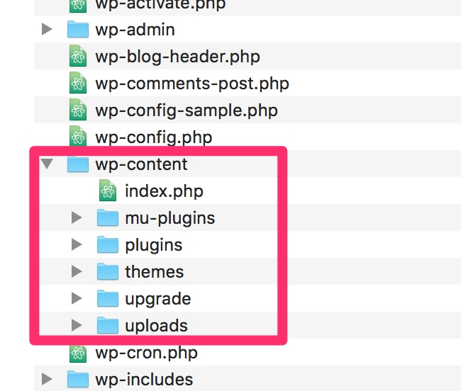

Customizing Your WordPress Site
The What, Where, How, and Why of Making Your Site Yours
Nate Finch
Who's this Nate guy??...
- WP for ~6 years, ~5 years full-time
- The Digital Ring, toptal, Codeable, and other clients for fun and profit
- Currently residing in Madison
- Texas >> Kansas >> Spain ( a little time in Morocco) >> France >> Illinois >> S. Korea >> and now Madison
- “I’d be a professional student if I could…”
- Married w/ 1.5 year old daughter
The Questions
- Where do I make changes to my theme?
- Should I just put everything in
functions.php? - How can I add a JS library to my site?
- How can I update my site safely and not worry about losing customizations?
- How should I be thinking about customizations?
- What is the general structure of WordPress?
The Goal
- Beginner to Intermediate
- Framework with some specific examples
- Empower you to make decisions
I: The Initial Problem
DEMO
Axioms
- Themes handle Form, Plugins handle Function
- Code should go in Codebase
- Data should go in Databse
- Media Files should be processed through the Media Library (and reside in the
wp-content/uploadsdirectory) - And...
ABC
Always Be Closing...
Wait...
Always Be CheckingYouHaveABackupOfYourCodeAndDatabaseBeforeYouRunAnyUpdatesOrChangeAnything
II: Understanding the Structure and Intent
"Form and Function"
Themes Handle Form
- CSS
- Layout
- Theme supports
- Post Types (maybe)
- Whatever is specific to the current layout and style
Plugins Handle Function
- Basics: widgets
- Custom Fields/Meta Boxes
- CRM/Marketing
- E-commerce
- Memberships
- Anything that extends what's available "out of the box"
WordPress Structure
Where does all this stuff live?

- Customizations go in
wp-content - Use the "wp-content/* namespace"
- Don't hack core!
Let's Build Something!
A Styled After-Post Box
- override and hard code the single.php template file in child theme
- use an action hook in your theme's function.php file
- create a customizations plugin
Before Starting
- Make sure you have a code and databse backup
- Work on a Local Environment or Staging Enviornment (Local or VVV)
- Maybe even look at the Pantheon Workflow:
III. Making Style or Theme-Based Changes
- Make a Child Theme
- "Are the changes I want to make Form or Function?"
- Add Form changes to theme
- Use Child Theme's
style.css - Overriding templates
IV. Making Style or Theme-Based Changes
- Make a Child Theme
- "Are the changes I want to make Form or Function?"
- Add Form changes to theme
- Use Child Theme's
style.css - Overriding templates
Some FAQs...
Should I use the Custom CSS in the customizer?
- You can if you don't want to make a child theme.
Should I use a Custom CSS/JS plugin?- You can if you don't want to make a child theme or custom plugin.
Should I use a Custom PHP plugin?- You can, but you probably shouldn't.🤪
ALL of the above break the AXIOMS that Code should be in the Codebase and Data should be in the Database.
III. Making Functional Changes
Using a plugin allows us to:
- keep this functionality after a site redesign
- keeps function separated from form
- allows us to "separate concerns"
DEMO
- Create a single file plugin
- Activate it in wp-admin
- Copy over the template, leave the styles
- Use action hook (or add your own!!)
*Bonus Points*
- Create a multifile plugin with inc. PHP, JS and CSS
- Don't add your own version of jQuery